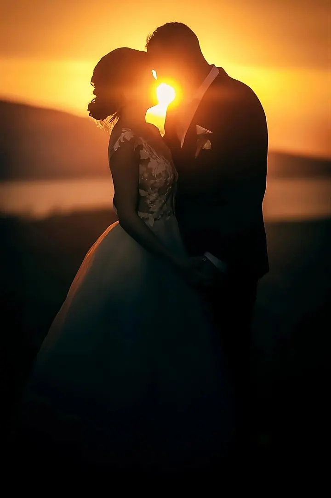
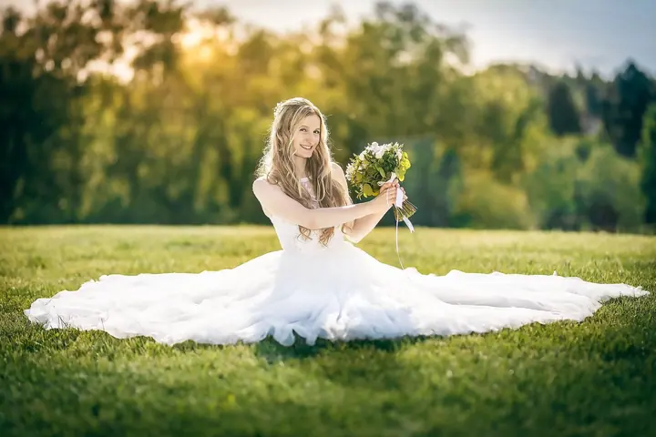

jedna
Svatební focení
Nebudu vás hodiny aranžovat do strnulých póz. Budu tam, kde se dějí skutečné momenty, abyste si den užili a vypadali přirozeně a šťastně.

Svatební a rodinný fotograf · Brno, Kuřim, celá ČR

Jmenuji se Tomáš Luka a jsem svatební a rodinný fotograf z Brna. Za svatbou dojedu po celé republice a s rodinami se nejraději potkávám venku v přirozeném světle. Na vaši akci přivezu i vlastní fotobudku, u které se hosté vyřádí.
Více o mně
Co fotím
jedna
Nebudu vás hodiny aranžovat do strnulých póz. Budu tam, kde se dějí skutečné momenty, abyste si den užili a vypadali přirozeně a šťastně.
dvě
Focení berte jako příjemnou procházku, při které si popovídáme. Nejraději fotím venku v přirozeném světle na vašem oblíbeném místě nebo na mých ověřených lokacích v Brně a okolí.
tři
Krátké vánoční focení v ateliéru v Kuřimi, i o víkendech. Domácí mazlíčci jsou vítáni a fotky máte většinou ještě v den focení.
Zábavný fotokoutek na svatbu nebo jinou akci. Tisk není omezený a hosté si odnesou fotky domů, vy knihu vzpomínek.
Žádný stres, jen čistá radost


Za objektivem
Focení je pro mě hlavně zábavou a potřebou získávat další zkušenosti a zajímavé pohledy na všední věci. Nejsem jen svatební a rodinný fotograf, ale hlavně nadšenec, který vyhledává výzvy.
Na svatbě vás nebudu hodiny aranžovat. Chci, abyste si den užili a vypadali přirozeně a šťastně. Žádný stres, jen radost. Fotky máte do 10 dnů a k balíčkům patří i předsvatební schůzka, online plánovač a tisk fotografií.
U rodinného focení vás jemně navedu, abyste nemuseli přemýšlet, kam s rukama. Fotím těhulky, novorozence, děti i celé rodiny, v přírodě i ve vánočním ateliéru v Kuřimi. Práce s dětmi mě baví, a to i s těmi, které zrovna nechtějí spolupracovat.
Tomáš
Napište mi datum a místo svatby nebo focení. Hned vám dám vědět, jestli mám volno.
Probereme vaše představy, harmonogram dne i vhodný balíček. Rád vám navrhnu rozsah přesně podle vás.
Fotím momentky, detaily i všechno, co se kolem děje, a do ničeho vás netlačím. Na místě se můžeme domluvit i na prodloužení.
Upravené fotografie dostanete do 10 dnů v online zabezpečené galerii. Zálohu fotek držím minimálně 2 roky.
Portfolio
Fotografie jsou ilustrační
Otázky
Ze svatby do 10 dnů. Z vánočního focení většinou ještě týž den, nejpozději do 24 hodin.
Balíček L s 10 hodinami focení, 500+ fotkami a tiskem 60 ks stojí 19 900 Kč. Balíček Exclusive s fotobudkou, videozáznamem obřadu, předsvatebním focením a dopravou po celé ČR stojí 23 900 Kč. Menší rozsah začíná na 7 900 Kč.
Ano, za svatbou dojedu po celé ČR. Nejčastěji fotím v Brně, Olomouci, Ostravě, Zlíně, Praze a Znojmě.
To nevadí. Focení berte jako procházku, při které si povídáme. Já vás jen jemně navedu a zbytek nechám na vás.